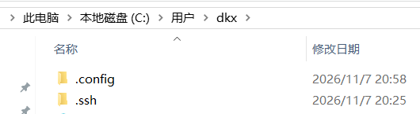

准备工作：
执行命令 mkdir -p ~/.ssh，将.ssh.zip 放到.ssh 目录中解压

设置 git 账户，如果没有设置的话：
git config --global user.name "你的用户名" | |
git config --global user.email "你的邮箱@example.com" |
校验.ssh 是否可成功连接
ssh -i ~/.ssh/id_ut9******* -T git@github.com |
输出如下说明成功
Hi username! You've successfully authenticated, but GitHub does not provide shell access. |
git push -u origin main 报错解决
直接执行：
git pull origin main --allow-unrelated-histories |
如果执行后没有冲突，并且成功合并，再执行：
git push -u origin main |
注意：不要使用 git push --force 来强制合并
1. 将 node_modes.zip 解压到博客目录中
2. 执行命令 Set-ExecutionPolicy -Scope CurrentUser RemoteSigned 按 Y
3. 执行命令 npm install --force
- --force 绕过
4. 执行命令 npm install -g hexo@4.2.1
- 如果提示需要下载 npm install hexo --save 那么就执行 npm install hexo@4.2.1 --save
- 如果 hexo 还是提示 npm install hexo --save 那么就在最后加上 --force 也可能是网络问题多试几次
windows 下使用 powershell 控制博客网站，使用 git 上传源博客